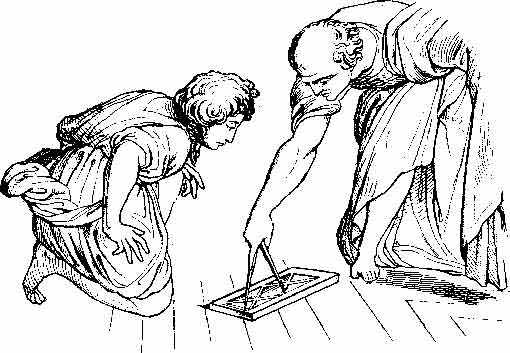

22 EUCLID ± 300 SM

Tidak banyak orang yang beruntung memperoleh kemasyhuran
yang abadi seperti Euclid, ahli ilmu ukur Yunani yang besar.
Meskipun semasa hidupnya tokoh-tokoh seperti Napoleon,
Martin Luther, Alexander yang Agung, jauh lebih terkenal
ketimbang Euclid tetapi dalam jangka panjang ketenarannya
mungkin mengungguli semua mereka yang disebut itu.
Selain kemasyhurannya, hampir tak ada keterangan
terperinci mengenai kehidupan Euclid yang bisa diketahui.
Misalnya, kita tahu dia pernah aktif sebagai guru di
Iskandariah, Mesir, di sekitar tahun 300 SM, tetapi kapan
dia lahir dan kapan dia wafat betul-betul gelap. Bahkan,
kita tidak tahu di benua apa dan dikota apa dia dilahirkan.
Meski dia menulis beberapa buku dan diantaranya masih ada
yang tertinggal, kedudukannya dalam sejarah terutama
terletak pada textbooknya yang hebat mengenai ilmu ukur yang
bernama The Elements.
Arti penting buku The Elements tidaklah terletak pada
pernyataan rumus-rumus pribadi yang dilontarkannya. Hampir
semua teori yang terdapat dalam buku itu sudah pernah
ditulis orang sebelumnya, dan juga sudah dapat dibuktikan
kebenarannya. Sumbangan Euclid terletak pada cara pengaturan
dari bahan-bahan dan permasalahan serta formulasinya secara
menyeluruh dalam perencanaan penyusunan buku. Di sini
tersangkut, yang paling utama, pemilihan dalil-dalil serta
perhitungan-perhitungannya, misalnya tentang kemungkinan
menarik garis lurus diantara dua titik. Sesudah itu dengan
cermat dan hati-hati dia mengatur dalil sehingga mudah
difahami oleh orang-orang sesudahnya. Bilamana perlu, dia
menyediakan petunjuk cara pemecahan hal-hal yang belum
terpecahkan dan mengembangkan percobaan-percobaan terhadap
permasalahan yang terlewatkan. Perlu dicatat bahwa buku The
Elements selain terutama merupakan pengembangan dari bidang
geometri yang ketat, juga di samping itu mengandung
bagian-bagian soal aljabar yang luas berikut teori
penjumlahan.
Buku The Elements sudah merupakan buku pegangan baku
lebih dari 2000 tahun dan tak syak lagi merupakan textbook
yang paling sukses yang pernah disusun manusia. Begitu
hebatnya Euclid menyusun bukunya sehingga dari bentuknya
saja sudah mampu menyisihkan semua textbook yang pernah
dibikin orang sebelumnya dan yang tak pernah digubris lagi.
Aslinya ditulis dalam bahasa Yunani, kemudian buku The
Elements itu diterjemahkan ke dalam pelbagai bahasa.
Terbitan pertama muncul tahun 1482, sekitar 30 tahun sebelum
penemuan mesin cetak oleh Gutenberg. Sejak penemuan mesin
itu dicetak dan diterbitkanlah dalam beribu-ribu edisi yang
beragam corak.
Sebagai alat pelatih logika pikiran manusia, buku The
Elements jauh lebih berpengaruh ketimbang semua risalah
Aristoteles tentang logika. Buku itu merupakan contoh yang
komplit sekitar struktur deduktif dan sekaligus merupakan
buah pikir yang menakjubkan dari semua hasil kreasi otak
manusia.
Adalah adil jika kita mengatakan bahwa buku Euclid
merupakan faktor penting bagi pertumbuhan ilmu pengetahuan
modern. Ilmu pengetahuan bukanlah sekedar kumpulan dari
pengamatan-pengamatan yang cermat dan bukan pula sekedar
generalisasi yang tajam serta bijak. Hasil besar yang
direnggut ilmu pengetahuan modern berasal dari kombinasi
antara kerja penyelidikan empiris dan percobaan-percobaan di
satu pihak, dengan analisa hati-hati dan kesimpulan yang
punya dasar kuat di lain pihak.
Kita masih bertanya-tanya apa sebab ilmu pengetahuan
muncul di Eropa dan bukan di Cina, tetapi rasanya aman jika
kita menganggap bahwa hal itu bukanlah semata-mata lantaran
soal kebetulan. Memanglah, peranan yang digerakkan oleh
orang-orang brilian seperti Newton, Galileo dan Copernicus
mempunyai makna yang teramat penting. Tetapi, tentu ada
sebab-musababnya mengapa orang-orang ini muncul di Eropa.
Mungkin sekali faktor historis yang paling menonjol apa
sebab mempengaruhi Eropa dalam segi ilmu pengetahuan adalah
rasionalisme Yunani, bersamaan dengan pengetahuan matematika
yang diwariskan oleh Yunani kepada Eropa. Patut kiranya
dicatat bahwa Cina --meskipun berabad-abad lamanya
teknologinya jauh lebih maju ketimbang Eropa-- tak pernah
memiliki struktur matematika teoritis seperti halnya yang
dipunyai Eropa. Tak ada seorang matematikus Cina pun yang
punya hubungan dengan Euclid. Orang-orang Cina menguasai
pengetahuan yang bagus tentang ilmu geometri praktis, tetapi
pengetahuan geometri mereka tak pernah dirumuskan dalam
suatu skema yang mengandung kesimpulan.
Bagi orang-orang Eropa, anggapan bahwa ada beberapa dasar
prinsip-prinsip fisika yang dari padanya semuanya berasal,
tampaknya hal yang wajar karena mereka punya contoh Euclid
yang berada di belakang mereka. Pada umumnya orang Eropa
tidak beranggapan geometrinya Euclid hanyalah sebuah sistem
abstrak, melainkan mereka yakin benar bahwa gagasan Euclid
--dan dengan sendirinya teorinya-- memang benar-benar
merupakan kenyataan yang sesungguhnya.
Pengaruh Euclid terhadap Sir Isaac Newton sangat kentara
sekali, sejak Newton menulis buku kesohornya The Principia
dalam bentuk kegeometrian, mirip dengan The Elements.
Berbagai ilmuwan mencoba menyamakan diri dengan Euclid
dengan jalan memperlihatkan bagaimana semua kesimpulan
mereka secara logis berasal mula dari asumsi asli. Tak
kecuali apa yang diperbuat oleh ahli matematika seperti
Russel, Whitehead dan filosof Spinoza.
Kini, para ahli matematika sudah memaklumi bahwa geometri
Euclid . bukan satu-satunya sistem geometri yang memang jadi
pegangan pokok dan teguh serta yang dapat direncanakan pula,
mereka pun maklum bahwa selama 150 tahun terakhir banyak
orang yang merumuskan geometri bukan a la Euclid.
Sebenarnya, sejak teori relativitas Einstein diterima orang,
para ilmuwan menyadari bahwa geometri Euclid tidaklah
selamanya benar dalam penerapan masalah cakrawala yang
sesungguhnya. Pada kedekatan sekitar "Lubang hitam" dan
bintang neutron --misalnya-- dimana gayaberat berada dalam
derajat tinggi, geometri Euclid tidak memberi gambaran yang
teliti tentang dunia, ataupun tidak menunjukkan penjabaran
yang tepat mengenai ruang angkasa secara keseluruhan.
Tetapi, contoh-contoh ini langka, karena dalam banyak hal
pekerjaan Euclid menyediakan kemungkinan perkiraan yang
mendekati kenyataan. Kemajuan ilmu pengetahuan manusia
belakangan ini tidak mengurangi baik hasil upaya intelektual
Euclid maupun dari arti penting kedudukannya dalam
sejarah.
|